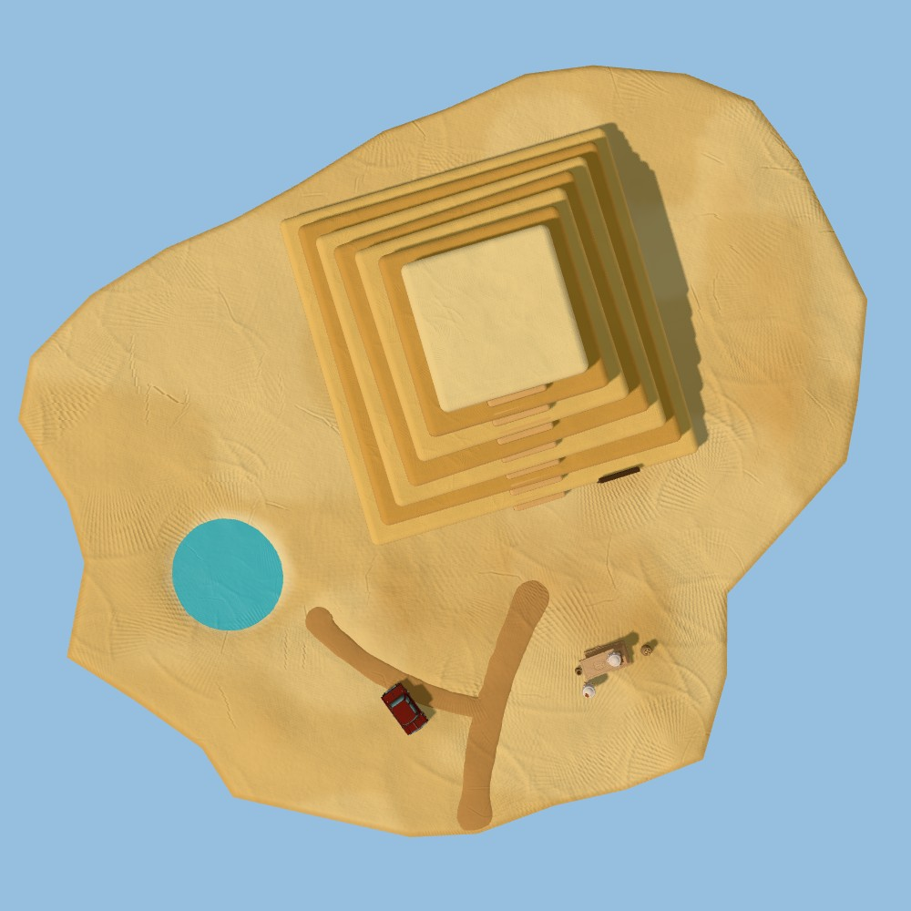
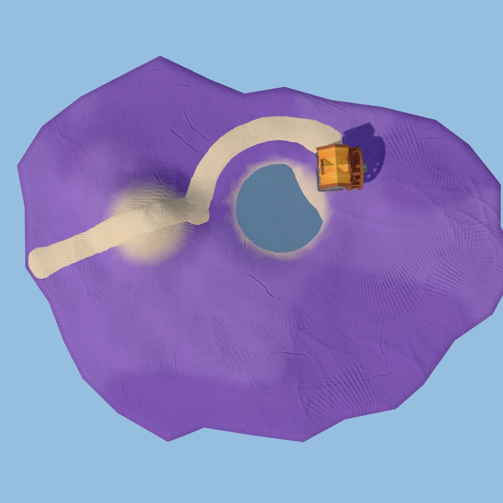
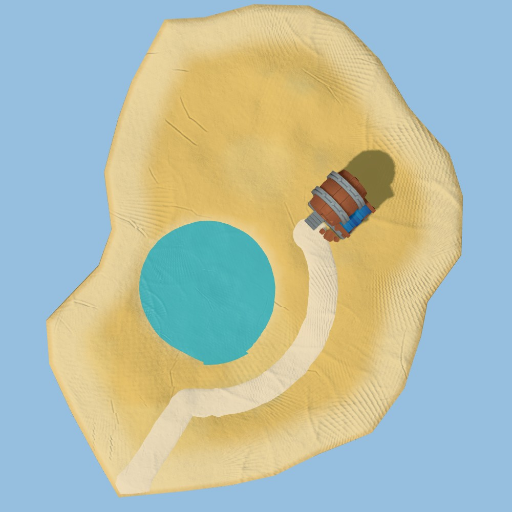
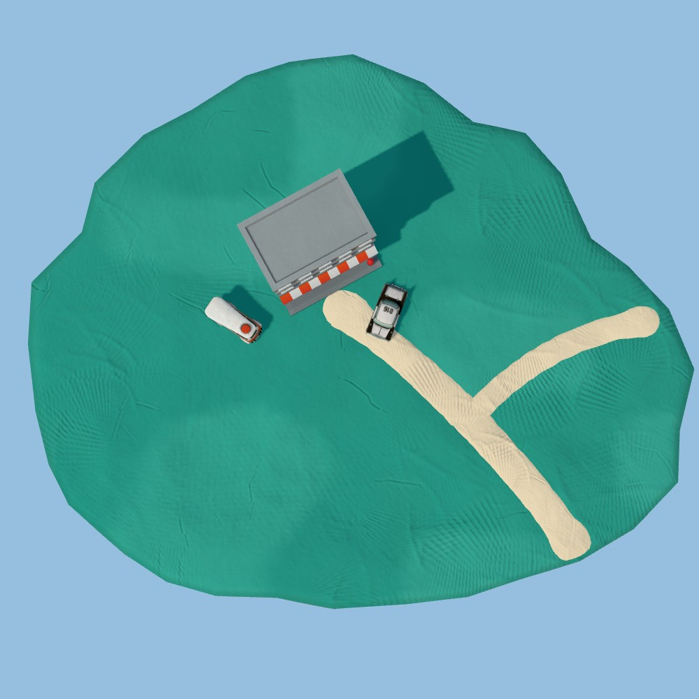

| Ursprung | Eine Oase in der Wüste; um sie herum die Baustelle einer Pyramide, die nie fertig wurde. Okkult, altes Ägypten, Lovecraft. |
| Lebensader | Die Oase mit Quelle und Palmenhain; ein Pfad zum Steinbruch und zur Baurampe. |
| Landmarke | Die unvollendete Pyramide (13 Lagen, flache Plattform); oben Auge oder Vogelgott, an der Flanke der Dungeon-Eingang. |
| Arbeit / Leben | Steinbruch an der Inselkante, Schlitten mit Quader, Zeltlager der Bauleute, Wasserkrüge. Die Mumien sind die Bauleute. |
| Spuren | Schleifspuren im Sand vom Steinbruch zur Rampe, abgeschlagene Quaderkanten, Trampelpfad Oase → Lager. |
| Natur nach Gelände | Palmen und Schilf nur an der Oase; sonst Dünen, Steine, vereinzelte Dornbüsche im Windschatten; totes Holz, wo die Oase früher reichte. |

| Ursprung | Ein Bach hat aus dem Canyonfels ein Tal gegraben; ein Müller hat sich am Mühlteich angesiedelt. |
| Lebensader | Bach und Mühlteich; der Weg kommt über den Hügel zur Mühle. |
| Landmarke | Die Wassermühle. |
| Arbeit / Leben | Mahlen, Holz schlagen im alten Kugelwald. |
| Spuren | Baumstümpfe am Waldrand, Holzstapel an der Mühle, ausgetretener Weg. |
| Natur nach Gelände | Kugelwald hinter der Mühle, Jungwald wo gefällt wurde, Weiden am Wasser, Kiefern auf dem mageren Hügel. |

| Ursprung | Eine Lagune, die das Meer zurückgelassen hat: ein Unterwasser-Strand. |
| Lebensader | Die Lagune und der Steg im Süden. |
| Landmarke | Die Strandtaverne. |
| Arbeit / Leben | Bewirten, Fischen, Tang sammeln. |
| Spuren | Pfad vom Steg zur Taverne, Fußspuren im Sand, Liegen und Fässer. |
| Natur nach Gelände | Tangbäume mit rosa Blüten am Ufer (aus angespültem Tang), Palmen vom Wirt vor der Taverne, Dünengras; lebende Korallen nur im flachen Wasser. |

| Ursprung | Eine Vorstadt auf ebenem Grund. |
| Lebensader | Die Straße (RKIT) und der Parkplatz. |
| Landmarke | Das Stadthaus. |
| Arbeit / Leben | Wohnen, Parken, Gärtnern. |
| Spuren | Trampelpfad quer über den Rasen (Abkürzung), Pfähle an Jungbäumen, Beetrand. |
| Natur nach Gelände | Alles gepflanzt: Straßenbäume in Reihe, Herbstpark hinter dem Haus, Blumenbeet, geschnittene Hecken; Schieferbrocken nur am Rand, aus der Baugrube. |